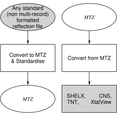

|
CCP4 Roadmaps |
| REFLECTION DATA UTILITIES |


|

| diagram created with dot, from the graphviz package |
| CCP4i task | Associated CCP4 program(s) |
|---|---|
| Calculate Fs & Phases |
|
| Convert to MTZ & Standardise |
|
| Convert from MTZ |
|
| Edit MTZ File |
|
| Merge MTZ Files |
|
| Edit MTZ Datasets |
|
| Reindex Reflections |
|
| SF File Analysis |
|
| Sigma-A |
|